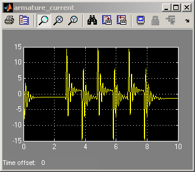
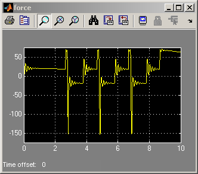
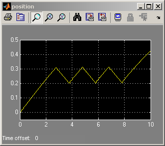
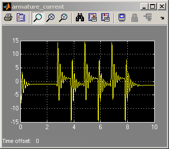
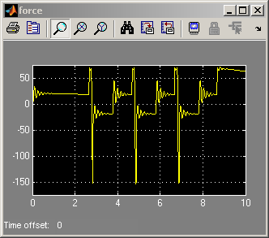
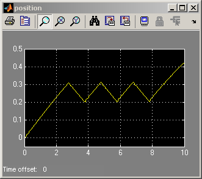
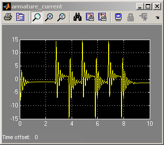
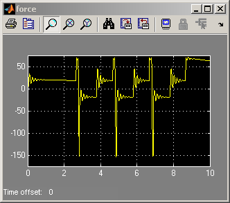
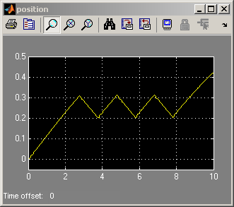

Simulink® パワー ウィンドウ コントローラーと詳細なプラント モデル
挟まった物体に窓が及ぼす力が 100 N を超えないことを検証するために、電気および機械ドメインにパワー効果を含めるより詳細なプラント モデルが使用されます。
このパワー ウィンドウ デモを実行するには、SimMechanics™ と SimPowerSystems™ をインストールしなければなりません。
   
   挟まった物体に窓が及ぼす力が 100 N を超えないことを検証するために、電気および機械ドメインにパワー効果を含めるより詳細なプラント モデルが使用されます。
このパワー ウィンドウ デモを実行するには、SimMechanics™ と SimPowerSystems™ をインストールしなければなりません。
  